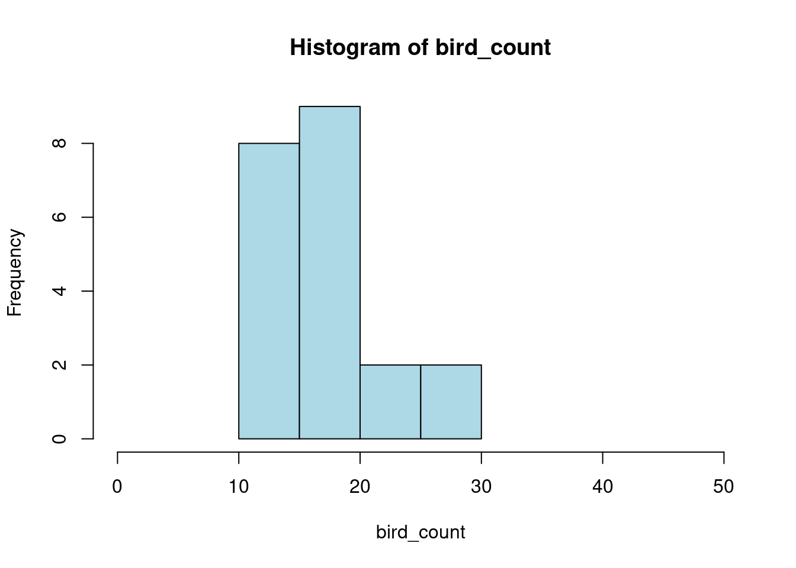
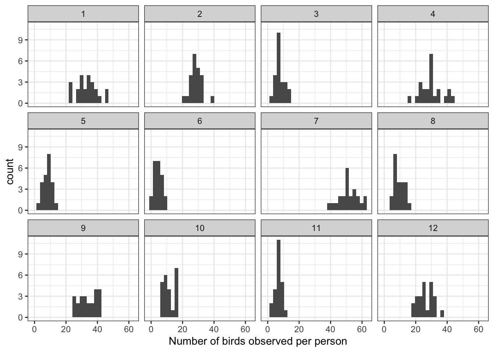
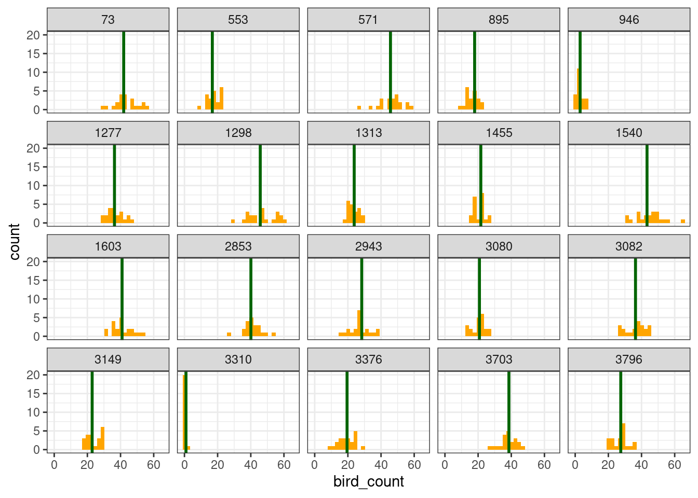
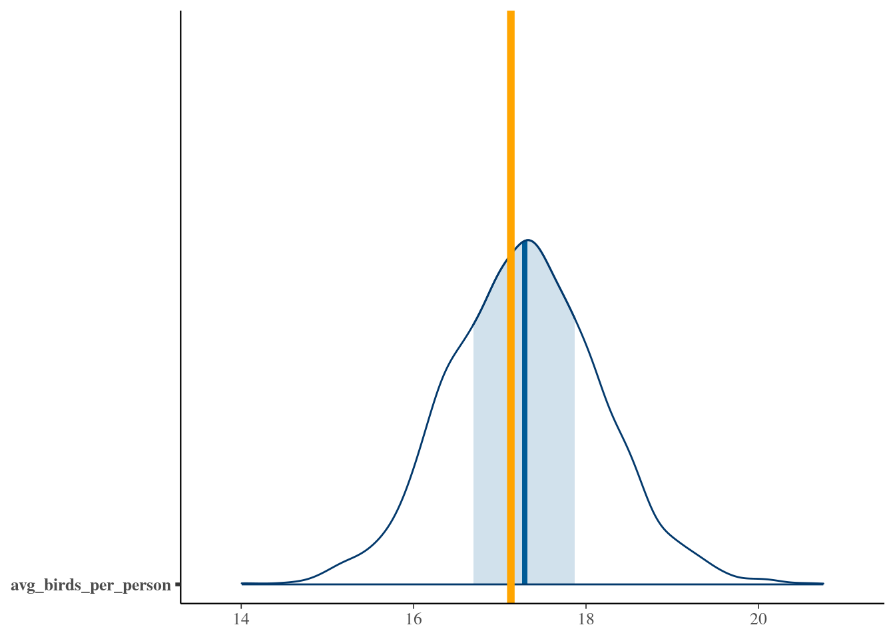
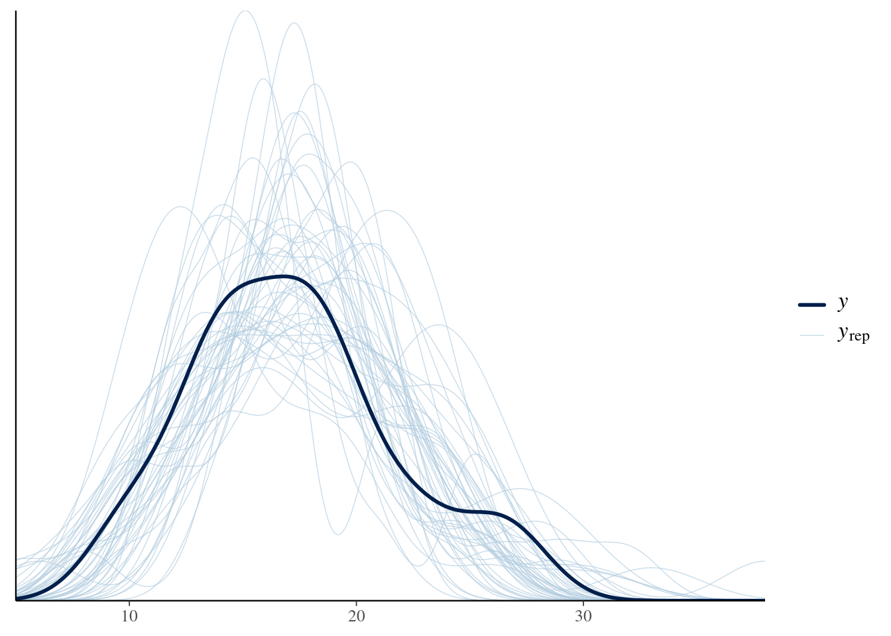
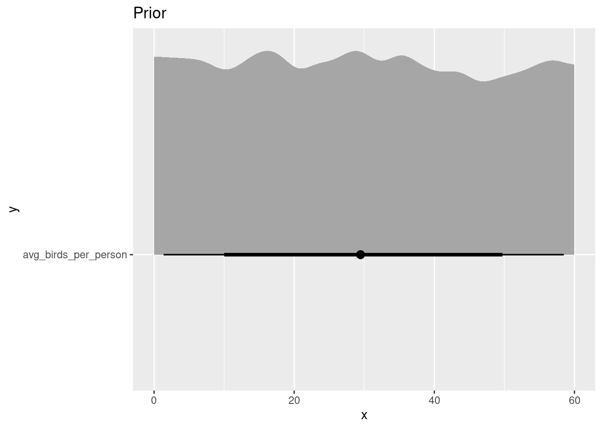

library(tidyverse)
library(cmdstanr)Catch a wild distribution
A practice of the most basic bit of applied statistics you can do, and a foundation for what comes next.
Goals of this lesson
- Introduce the idea of a generative model
- Using generated data to validate a model
- Stan model syntax
- Outline of a Bayesian workflow
Our steps today
To warm up for this class we will conduct a brief exercise . This exercise serves a few purposes. First, it will help us to think about data generating processes. Second, it will introduce us to some of the bestiary of statistical distributions that have been invented. Third, it will help us practice the whole cycle of applied statistics: question, simulation, data collection, fitting and checking a model, interpretation. Most importantly, it will help us to get to know each other a bit!
Exercise: Catch a wild distribution
- Separate yourselves into groups. The groups should be at least 2 people. Suggestion pair with people you’ve only just met.
- Each group should pick a different quantity that they will measure repeatedly. This can be anything that you can measure about 30 times or so in about 1.5 hours or so. Your measurements should be of the SAME thing. Here are some ideas to get you started:
- How long can someone hop on one foot
- amount of change in everyone’s pockets
- how many birds can you hear in 2 minutes
- Hypothesize What stastical distribution might describe these observations? Think about the kind of statistical distribution that might represent this phenomenon! Take a moment and write down the name of the distribution, and why it might describe the thing you’re going to measure. 2 Simulate. create a simulation of the data you’re about to collect. Every statistical distribution has four functions in R, and here you can use two of them: the the density function and the random number. These always start with
dandrrespectively, e.g.dnorm()andrnorm. Simulate about as many number as you hope to collect. There’s a quick example below. - Collect after you have an idea of what your data might look like, go and get some! Try to get a good number (30 or more), this should take about 1hr depending on time.
- Enter the data into R and visualize them. Do they match your hypothesized distribution? How do you know? If it doesn’t match, why might that be? For this step you have a couple of choices.
Part 2
Statistical field work – exploring your dataset
Step 1. Return to your hypothesized distribution. Find its random number generation function (e.g. rbinom() for the Binomial Distribution). Experiment with different parameters values to create data that looks close to your own data.
Step 2. Attempt to fit the same parameters by Maximum likelihood. If you distribution has two parameters, fix one and find the Maximum Likelihood value of the other. Stretch goal Try to fit both of them at once.
Step 3. Look at the help for ?MASS::fitdistr(). Try to use it to find your distribution parameters.
Before starting work on real data, we are going to begin by learning how to generate data by simulation. There are at least three reasons why this is a good idea:
- Understand your priors.. For most interesting models in ecology, you will not be able to pick good numbers for your prior parameters just by thinking hard. Should the prior on annual tree growth be \(\text{Normal}(2, 1)\) ? Or should the standard deviation be bigger? Smaller? As we’ll see, simulation will demystify the process.
- Validate your model. Bayesian models are great because they can create datasets by simulation. This suggests a very minimum requirement we might have for a statistical model: use known parameters and a model to generate data, then fit that same model to the very data it generated, and see if we get back something close to those known parameter values.
- Test your understanding. Perhaps most importantly, simulation helps you to test your own intuition. If you can simulate data from your model, then you really understand it! If you can’t, then you don’t know quite how it works yet. It’s rare1 that a biologist will fail to learn something by simulating a dataset.
Simple exercise in simulation
Let’s imagine we are taking a walk as a group today at the beautiful SBL. What is the number of birds (total abundance of ALL species) each of us is going to see on our hike?
Some questions to ask about simulated data
What kind of observations are you going to make? Do they have a minimum or maximum value? Are they integers, or are they decimal numbers, or something else?
Where do the numbers come from? This could be anything, from simple linear approximations (i.e. the models we’re looking at in this course) to ODEs, mathematical models, GAMs, etc.
How many observations will we be making?
The process
Let’s try to answer these questions for the bird walk we are about to take.
- We’re going to count birds, so we’ll have count data: a number that is either 0 or some positive, round number
- We’ll make a simplifying assumption: everybody has the same chance of seeing a bird (i.e. no differences in skill or equipment), and everyone in the class is an independent observer (i.e. nobody is working in pairs, etc.)
- Everyone in the class makes only one count, so we have 22 numbers.
We’re Bayesian, so we need to write a probability distribution for all the possible values.
\[ \begin{align} \text{Number of Birds}_{\text{seen by person i}} &\sim \text{Poisson}(\lambda) \\ \lambda &\sim \text{Uniform}(0, 60) \end{align} \]
A quick note about notation for models like these:
- We use a subscript \(i\) to indicate the “label” for each observation in our dataset. You can think of this as the row number of the data spreadsheet, and imagine sliding your finger down the column of measurements, modelling each value in turn.
- Usually we’ll use more general language, such as \(y_i\). But for this simple example I wanted to make things as explicit as possible.
- Notice the symbol \(\sim\). This is read as “distributed as”, and indicates the probability distribution from which the values might come. When the values we’re talking about are data that we can observe (in this case, counts of birds), we call the distribution the likelihood. When the value is something we can’t observe (in this case, the average count \(\lambda\)) we call the distribution the prior.
Warning
We’ll be talking about better ways to model count data in a later exercise! For now, I’m using the Uniform distribution for simplicity. It’s not usually a very good choice!
Simulation in R
One of the most useful traits of Bayesian models is that they are generative: they can be used to make a simulated dataset. We’ll do that now for our bird example.
let’s simulate from a Poisson distribution:
set.seed(525600)
n_people <- 21
avg_birds_per_person <- runif(1, min = 0, max = 30)
bird_count <- rpois(n_people, lambda = avg_birds_per_person)Some things to note in the code above:
Every statistical distribution that is in R (which is a lot! almost all! ) has four different functions. If the distribution is called dist, then they are:
rdist= draw random numbers fromdistqdist= the quantile function – what value gives a certain proportion of the distribution?pdist= the probability density function – what proportion of the distribution is below a certain value?ddistthe density function = draws the “shape” of a distribution. How probable are specific values?
The other thing to note is that there are TWO simulation steps here: first, simulating a value of the average (\(\lambda\)) and second, simulating observations. In our model, the Uniform distribution was referred to as the prior, and the Poisson distribution was referred to as a likelihood, but here you can see that they are very nearly the same thing: just statements about what distribution of values might be most consistent with the data.
Plotting the result
Let’s take a look at our simulated values:
hist(bird_count, col = "lightblue", xlim = c(0, 50))
This is pretty great, and represents one possible realization of sampling. However, one sample isn’t enough to tell us about what our \(\text{Uniform}(0, 60)\) prior really means. Let’s do a few different simulations:
library(tidyverse)
set.seed(525600)
simulate_some_birds <- function() {
lambda <- runif(1, min = 0, max = 60)
data.frame(obs = rpois(23, lambda = lambda))
}
rep_list <- replicate(12, simulate_some_birds())
tibble::tibble(simulation = 1:12,
obs = rep_list) |>
unnest(cols = "obs") |>
ggplot(aes(x = obs)) +
geom_histogram(bins = 28) +
facet_wrap(~simulation) +
theme_bw() +
labs(x = "Number of birds observed per person")
This figure shows different simulations of what, according to our prior, might be reasonable datasets for us to study. Do any of them seem implausible to you? If so, try changing the prior. The goal is to make fake datasets that seem plausible, but which still include the possibility of some surprising observations.
When you have a prior that generates observations that cover a range of scientifically reasonable values, then you are ready to move on to fitting real data.
However before we actually do that, let’s do the whole thing again: this time in Stan.
Simulating data in Stan
Let’s look back at the equation:
\[ \begin{align} \text{Number of Birds}_{\text{seen by person i}} &\sim \text{Poisson}(\lambda) \\ \lambda &\sim \text{Uniform}(0, 60) \end{align} \]
And then translate it into Stan:
poisson_simulation <- cmdstan_model(
stan_file = "topics/01_simulation/poisson_simulation.stan")
poisson_simulationdata {
int<lower=0> n_people;
}
generated quantities {
real<lower=0> avg_birds_per_person;
// an array -- like a list in R
array[n_people] int<lower=0> bird_count;
// simulate averages
avg_birds_per_person = uniform_rng(0, 60);
// simulate observations with that average
for (i in 1:n_people){
bird_count[i] = poisson_rng(avg_birds_per_person);
}
}What you see just above is not R, but is the first Stan program we will see in this course. Stan code is written in a text file, which you then bring into R with the function cmdstan_model as shown above. This does more than read the program, it compiles the code into a computer program. When you sample the model, as we’ll do later, Stan samples the posterior distribution using Hamiltonian Monte Carlo.
This Stan program has two parts. Each part is separated with curly braces, {}. The are they data block and the generated quantities block:
data {
int<lower=0> n_people;
}And the generated quantites block.
generated quantities {
real<lower=0> avg_observed;
// an array -- like a list in R
array[n_people] int<lower=0> bird_count;
// simulate averages
avg_birds_per_person = uniform_rng(0, 60);
// simulate observations with that average
for (i in 1:n_people){
bird_count[i] = poisson_rng(avg_birds_per_person);
}
}Let’s look at similarities and differences to the procedure in R:
similarities:
- We have a random number generating function for each of our distributions. In R, these were called
runifandrpois, here they areuniform_rngandpoisson_rng. - Once again, the only thing we need to provide is
n_people, the number of observers we have
differences:
- every line ends with a semicolon
; - in Stan, the name of a variable is on the RIGHT of a line, while in R it’s on the left.
- we need to use a for-loop to generate random variables.
- note the syntax for creating an
arrayof integers. Arrays in Stan are a little like lists in R: they can hold any other kind of object, and are of a certain length.
# We connect the data in R to the model in Stan using a
# named list!
poisson_simulation_datalist <- list(
n_people = 21
)
poisson_sim_stan <- poisson_simulation$sample(
data = poisson_simulation_datalist,
refresh = 0,
# usually not necessary -- this model has no parameters
fixed_param = TRUE)Running MCMC with 4 sequential chains...
Chain 1 finished in 0.0 seconds.
Chain 2 finished in 0.0 seconds.
Chain 3 finished in 0.0 seconds.
Chain 4 finished in 0.0 seconds.
All 4 chains finished successfully.
Mean chain execution time: 0.0 seconds.
Total execution time: 0.5 seconds.This generates a large number of simulated datasets – the default is 4000 datasets! Each time the model samples, it draws a new value for the unobserved average (avg_birds_per_person) and for the number of birds seen by each person.
Let’s pull out just a few of these datasets and visualize them.
We’ll use a wonderful package called tidybayes to easily extract posterior draws from cmdstan objects.
library(tidybayes)
pois_sim <- tidybayes::spread_draws(poisson_sim_stan,
avg_birds_per_person,
bird_count[],
ndraws = 20,
seed = 525600)Here we pass tidybayes::spread_draws() the model name, as well as the names of the parameters that we want to work with. The parameter avg_birds_per_person is a scalar, so we only need to mention it by name. The parameter vector bird_count needs square brackets after its name. This syntax is strange but gives us lots of options for more complex models, as we’ll see!
Let’s see what we get from tidybayes by looking at the first few rows.
pois_sim |>
as.data.frame() |>
head(25) |>
knitr::kable()| .chain | .iteration | .draw | avg_birds_per_person | bird_count |
|---|---|---|---|---|
| 1 | 553 | 553 | 24.4378 | 29 |
| 1 | 553 | 553 | 24.4378 | 27 |
| 1 | 553 | 553 | 24.4378 | 26 |
| 1 | 553 | 553 | 24.4378 | 30 |
| 1 | 553 | 553 | 24.4378 | 28 |
| 1 | 553 | 553 | 24.4378 | 21 |
| 1 | 553 | 553 | 24.4378 | 32 |
| 1 | 553 | 553 | 24.4378 | 24 |
| 1 | 553 | 553 | 24.4378 | 28 |
| 1 | 553 | 553 | 24.4378 | 26 |
| 1 | 553 | 553 | 24.4378 | 24 |
| 1 | 553 | 553 | 24.4378 | 11 |
| 1 | 553 | 553 | 24.4378 | 32 |
| 1 | 553 | 553 | 24.4378 | 19 |
| 1 | 553 | 553 | 24.4378 | 23 |
| 1 | 553 | 553 | 24.4378 | 28 |
| 1 | 553 | 553 | 24.4378 | 28 |
| 1 | 553 | 553 | 24.4378 | 10 |
| 1 | 553 | 553 | 24.4378 | 23 |
| 1 | 553 | 553 | 24.4378 | 24 |
| 1 | 553 | 553 | 24.4378 | 20 |
| 4 | 310 | 3310 | 28.4318 | 32 |
| 4 | 310 | 3310 | 28.4318 | 28 |
| 4 | 310 | 3310 | 28.4318 | 29 |
| 4 | 310 | 3310 | 28.4318 | 25 |
Remember we asked for only 20 of the 4000 posterior samples. Here is one sample, and just a bit of the next. We can see that the value of avg_birds_per_person is the same within each iteration. The model uses this average to sample every bird_count value, one for each person making observations. Then the program takes a new value of avg_birds_per_person and simulates everyone’s bird_count again!
Let’s take a look at some of these simulations:
pois_sim |>
ggplot(aes(x = bird_count)) +
geom_histogram(fill = "orange") +
geom_vline(aes(xintercept = avg_birds_per_person), col = "darkgreen", lwd = 1) +
facet_wrap(~.draw) +
theme_bw()`stat_bin()` using `bins = 30`. Pick better value with `binwidth`.
Parameter recovery
Let’s go back and look at the fake datasets we created in R
avg_birds_per_person[1] 17.12789bird_count [1] 23 10 19 27 20 15 16 18 18 22 14 14 14 18 17 13 26 19 16 13 10and let’s see if we can recapture the only known parameter, avg_birds_per_person, which is equal to 17.127887.
We’ll do it first in R, using the function fitdistr from the MASS package:
MASS::fitdistr(bird_count, dpois, start = list(lambda=10))Warning in stats::optim(x = c(23L, 10L, 19L, 27L, 20L, 15L, 16L, 18L, 18L, : one-dimensional optimization by Nelder-Mead is unreliable:
use "Brent" or optimize() directly lambda
17.2382812
( 0.9060239)This could also be done with glm
bird_glm <- glm(bird_count ~ 1, family = "poisson")
exp(coef(bird_glm))(Intercept)
17.2381 You can see that in all cases we are getting close to the value of avg_birds_per_person, which in these simulations is the true value.
Sampling the posterior distribution in Stan
We will be doing a lot of Stan models this week, and we will begin by replicating the above GLM in Stan.
poisson_model <- cmdstan_model(
stan_file = "topics/01_simulation/poisson_model.stan")
poisson_modeldata {
int<lower=0> n_people;
array[n_people] int<lower=0> bird_count_observed;
}
parameters {
real<lower=0> avg_birds_per_person;
}
model {
bird_count_observed ~ poisson(avg_birds_per_person);
avg_birds_per_person ~ uniform(0, 60);
}
generated quantities {
// an array -- like a list in R
array[n_people] int<lower=0> bird_count;
// simulate observations with that average
for (i in 1:n_people){
bird_count[i] = poisson_rng(avg_birds_per_person);
}
}This model has all the same code as the previous one, but has two additional parts. Let’s compare them
poisson_simulationdata {
int<lower=0> n_people;
}
generated quantities {
real<lower=0> avg_birds_per_person;
// an array -- like a list in R
array[n_people] int<lower=0> bird_count;
// simulate averages
avg_birds_per_person = uniform_rng(0, 60);
// simulate observations with that average
for (i in 1:n_people){
bird_count[i] = poisson_rng(avg_birds_per_person);
}
}poisson_modeldata {
int<lower=0> n_people;
array[n_people] int<lower=0> bird_count_observed;
}
parameters {
real<lower=0> avg_birds_per_person;
}
model {
bird_count_observed ~ poisson(avg_birds_per_person);
avg_birds_per_person ~ uniform(0, 60);
}
generated quantities {
// an array -- like a list in R
array[n_people] int<lower=0> bird_count;
// simulate observations with that average
for (i in 1:n_people){
bird_count[i] = poisson_rng(avg_birds_per_person);
}
}What’s different in this second Stan program? There are two new sections:
- parameters block : Indicated by
parameters {}, this block includes all the unobserved quantities. In this case there is only one:avg_birds_per_person. We have to give this value a name and say what kind of number it is. Here is also the place to declare any constraints. In our example, we state that the parameter is always positive (because it is an average of counts). - model block indicated by
model {}, this block contains the model. What this means in a Bayesian model is that it lists the probability distribution for all the observations, and for all the unobserved parameters. In other words, it looks just like our mathematical expressions above. The model block can also contain intermediate calculations, for example combining data and parameters with an equation. We’ll see examples later.
This Stan program also contains one line that’s been moved.
avg_birds_per_person ~ uniform(0, 60);has been moved to the model block. This has two consequences.
First, when the model sees our data, it’s going to try to find values of avg_birds_per_person which make those data probable – in other words, it is going to find the posterior distribution of possible values of the average. Together, the prior and the data constrain what those values can be.
Second, the generated quantities block means something different now. Previously, we had no idea what avg_birds_per_person should be, so we had the computer choose a random number from a wide range. We called this “the prior” Now, when the computer draws new values of bird_count, it is going to use the values from the posterior that it is finding in the model {} block . This means that the simulations, rather than being prior predictive checks, are now posterior predictive checks.
Parameter recovery
Let us see if the model recovers our parameters. Once again, we connect a dataset to our model with a list:
bird_data_list <- list(bird_count_observed = bird_count,
n_people = length(bird_count))
poisson_model_samp <- poisson_model$sample(data = bird_data_list,
refresh = 0)Running MCMC with 4 sequential chains...
Chain 1 finished in 0.0 seconds.
Chain 2 finished in 0.0 seconds.
Chain 3 finished in 0.0 seconds.
Chain 4 finished in 0.0 seconds.
All 4 chains finished successfully.
Mean chain execution time: 0.0 seconds.
Total execution time: 0.5 seconds.poisson_model_samp$summary()# A tibble: 23 × 10
variable mean median sd mad q5 q95 rhat ess_bulk ess_tail
<chr> <dbl> <dbl> <dbl> <dbl> <dbl> <dbl> <dbl> <dbl> <dbl>
1 lp__ 671. 671. 0.699 0.329 670. 672. 1.00 1912. 2347.
2 avg_birds_per_p… 17.2 17.2 0.907 0.919 15.8 18.8 1.00 1800. 2084.
3 bird_count[1] 17.2 17 4.30 4.45 10 25 1.00 3756. 4108.
4 bird_count[2] 17.1 17 4.29 4.45 10 24 1.00 3749. 3290.
5 bird_count[3] 17.3 17 4.29 4.45 11.0 25 1.00 3866. 3935.
6 bird_count[4] 17.3 17 4.20 4.45 11 24 1.00 3554. 3727.
7 bird_count[5] 17.1 17 4.19 4.45 11 24 1.00 3870. 3959.
8 bird_count[6] 17.2 17 4.26 4.45 11 25 1.00 3814. 3771.
9 bird_count[7] 17.2 17 4.29 4.45 10 25 1.00 3930. 3644.
10 bird_count[8] 17.2 17 4.26 4.45 10 25 1.00 4151. 3893.
# ℹ 13 more rowsWe can look at a table of coefficients but it is much easier to once again look at posterior samples as a figure.
Visualize everything!
Bayesian workflows are highly visual. Make as many plots as you can: of your parameters, your predictions, the performance of your chains, etc.
bayesplot
Another essential package for working with posterior samples is called bayesplot. Let’s use it to look at the posterior distribution for avg_birds_per_person.
## Extract draws from the model object
poisson_model_draws <- poisson_model_samp$draws()
bayesplot::mcmc_areas(poisson_model_draws, pars = "avg_birds_per_person") +
geom_vline(xintercept = avg_birds_per_person, col = "orange", lwd = 2)
avg_birds_per_person. The orange line is the true parameter value, which we simulated in R.Posterior predictive checks
Bayesian models MAKE data, which suggests a clear way to validate our models: ask the model to make some data, then see how well these data correspond to biology (e.g. to our real data). Here, we will take 50 fake datasets of bird counts and compare them to the simulation we first did in R.
The process involves a bit of fiddling around in R to get the simulated data, but then bayesplot does all the work:
bird_count_draws <- poisson_model_samp$draws(variables = "bird_count")
bird_count_draws_matrix <- posterior::as_draws_matrix(bird_count_draws)
bayesplot::ppc_dens_overlay(y = bird_count,
yrep = head(bird_count_draws_matrix, 50))
tidybayes again
As we see above, bayesplot offers many out-of-the-box figures. Sometimes however, you’ll want to control exactly what your figures look like, and for this tidybayes is an excellent tool.
Let’s use the flexibility of tidybayes to show how the prior and posterior differ between our two models
tidybayes::gather_rvars(poisson_sim_stan,
avg_birds_per_person) |>
ggplot(aes(y = "avg_birds_per_person", dist = .value)) +
tidybayes::stat_halfeye() +
labs(title = "Prior")
tidybayes::gather_rvars(poisson_model_samp,
avg_birds_per_person) |>
ggplot(aes(y = "avg_birds_per_person", dist = .value)) +
tidybayes::stat_halfeye() +
labs(title = "Posterior") +
coord_cartesian(xlim = c(0, 60))

Shinystan
shinystan::launch_shinystan(poisson_model_samp)Exercises
Level 1
- Let’s go birding! everyone in the class, over lunch, will go and count birds by eye! we’ll collect the vector, run and sample the model. Did our prior turn out to be appropriate?
- What would you do next to add complexity this model?
Level 2
- We plotted histograms to evaluate our model. Experiment with other types of plots. For example, what is the maximum value in each posterior simulation? What is the minimum? How to these compare to the real data?
- Take a closer look at
poisson_model_samp$summary()all the values ofbird_countare the same. That’s correct, but why?
Level 3
- You would never actually do the analysis in this exercise! If all you want is the average of a Poisson distribution, you can get that without any sampling at all. Start by writing the model with a different prior:
\[ \begin{align} \text{Number of Birds}_{\text{seen by person i}} &\sim \text{Poisson}(\lambda) \\ \lambda &\sim \text{Gamma}(9, .5) \end{align} \]
This lets us calculate the posterior distribution directly. See the equation on Wikipedia and calculate the posterior for our bird data.
Footnotes
in Andrew’s experience anyway↩︎